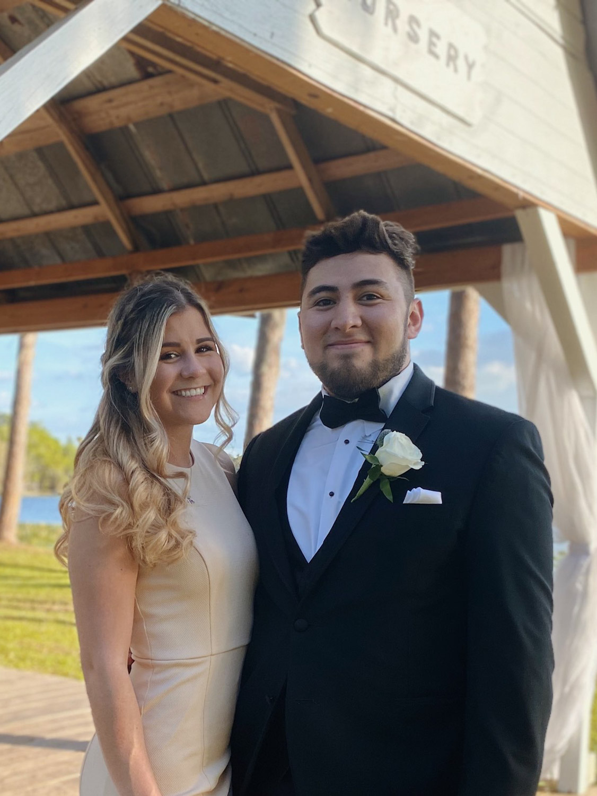
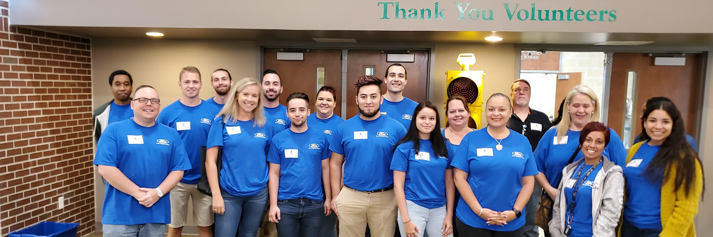

Bio

Hello World!
My name is Jacobi Arellano. I was born and raised in Colorado and currently live in Florida for about 10 years now. You can definitely say that my blood has thinned out over time for living in Florida for so long, yet I love taking time to visit the Rocky Mountains as well as my family in the good ol’ mile high city. My passions include photography, playing video games, as well as learning various subjects from podcasts. Recently, I have spent a lot of time on modifying code on certain video games as well as learning how to run local servers for certain games I play. What is interesting is that there are communities that work together on modifying the content within a video game to make it more enjoyable (or at least that is the intention). I love that aspect of how coding works and see that it applies for software development as well.
Why I want to be a software engineer
One of my favorite things that I have learned through this program is just how much one can add or modify to a website. What is interesting is that coming from an artistic background, I have noticed that it helps with my process to try and lay out content in a specific format. The reason why this is important to me is because I feel more creative with my work more than ever before and have the internet and this class to thank for proving that point. Creating this website feels more like a hobby, or something fun to do versus seeing it as a project that I must complete. The difference is that I could not stop going down the rabbit hole of what I can do to improve various elements of content and feel as if I could finally find a job role that I can not only be proficient at (over time), but also be committed to my work, and feel proud of the result. I have a passion for technology and feel as if I can bring a solid skillset to the table and learn as much as I can to ensure my success as software engineer. I think that through time, I will be able to become a great asset to the team and believe that I can use my artistic and creative features to become a well rounded developer.
Ford Credit
I started working at Ford for about 3 years and have had the pleasure of having a great experience throughout each department I have been a part of. Often, I feel blessed that I was able to get the job at 19. I did not have the luxury of having my college paid for after high school, so I had to focus on what I was good at and wait for the opportunity to reveal itself. Thankfully I have been able to not only go back to college, but I have also had doors open for new positions, new managers, as well as new coworkers to build my support network and rise as a team. Some of my favorite memories are when we used to work in the business center and would have weekly potlucks, HR activities like March Madness, as well as volunteering. The older I get, the more I feel like time flies, and I find it important to cherish the best moments I have had so far. I have a lot to look forward to but overall, I am blessed with having a great job, especially with the effects of COVID the past few years.